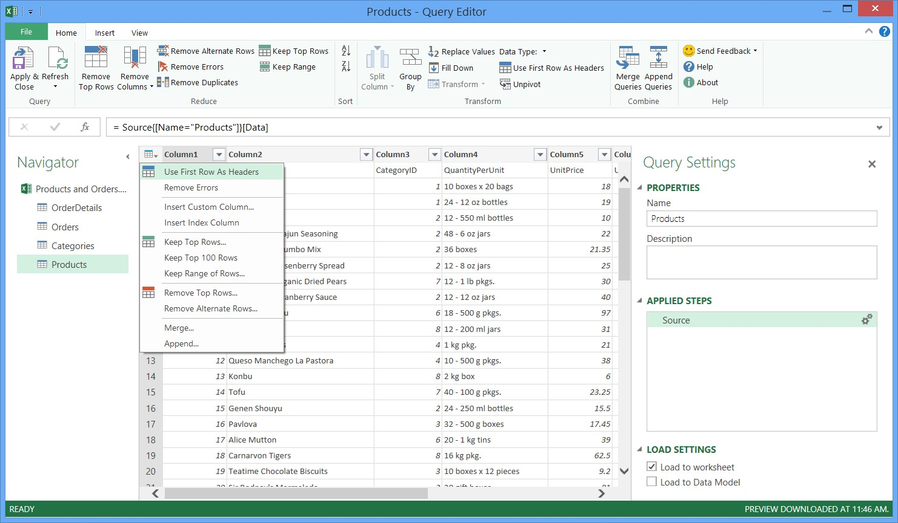
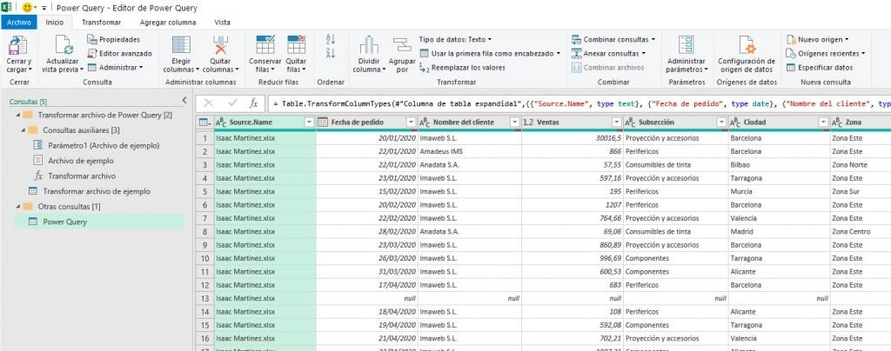

3. Combinar datos de diferentes orígenes
Una vez que se tienen los datos de ejemplo y los datos del S&P 500, se procede a combinarlos. Para combinar los datos se pulsa en la pestaña combinar, de las herramientas de consulta.
combinar
Se deben incluir únicamente los datos relevantes que guardan relación. En este caso, se necesitará de la consulta1 "stock_symbol" y del S&P 500 Ticker Symbol.
Consulta
Una vez que los datos a combinar hayan sido seleccionados, se mostrará un mensaje de privacidad en el cual se debe indicar el nivel de privacidad para los datos públicos. Se debe aceptar y continuar. En cuanto al tipo de combinación, se recomienda dejar la opción predeterminada que aparece.
Datos combinados
Los datos pueden ser editados desde la ventana del Editor de Consultas, la cual constituye la interfaz completa para todas las consultas de Power Query, abarcando consultas, combinaciones y anexos. En este caso, se procederá a eliminar columnas que no son necesarias, como la columna "GICS Sub Industry".
Eliminar columna
Mediante este proceso, se logra la combinación de varios datos provenientes de diferentes fuentes.
Al realizar la combinación, se generan tablas expandibles. Para expandirlas, se debe dirigir a la última columna, denominada "Nueva columna", y hacer clic en las dos flechas para luego seleccionar "Aceptar".
Combinar columnas
A continuación, se procederá a obtener más datos para combinar, en este caso, se utilizará el libro de ejemplo NASDAQ. En lugar de cargar toda la carpeta, se utilizará una forma alternativa de carga, importándolo desde Excel. Para ello, en la pestaña "Datos", se seleccionará "Nueva consulta", luego "Desde un archivo", "Desde un libro" y se elegirá el libro de ejemplo NASDAQ_2009.
Cargar libro
Se selecciona NASDAQ_2009 y se pulsa en cargar:
Nasdaq
Una vez finalizada la carga, en la barra de navegación se mostrará el libro que ha sido cargado. Al colocar el cursor sobre él, se podrá obtener una vista previa del contenido.
Vista previa
Se debe hacer clic con el botón derecho del ratón sobre la hoja de cálculo "NASDAQ_2009" y seleccionar la opción de "Editar", con el fin de abrir el editor de consultas y realizar las modificaciones necesarias en los datos antes de incluirlos en Excel.
Editor de consultas
Únicamente se modificará el encabezado, colocándolo en la primera fila, tal como se hizo en la consulta previa.
Se llevará a cabo una nueva combinación entre S&P500 y NASDAQ_2009, siguiendo el mismo proceso realizado anteriormente con NYSP.
En este momento, se cuenta con dos combinaciones: una entre S&P500 y NYSE, y otra entre S&P500 y NASDAQ_2009. Sin embargo, se desea tener todos estos datos en un único conjunto de datos. Por lo tanto, se realizará la operación de anexar las dos consultas. Para ello, se debe acceder a las herramientas de consulta y seleccionar la opción de anexar.
Anexar
Se mostrará una ventana donde se deberá seleccionar las combinaciones que se desean anexar, en este caso, "merge1" y "merge2", que son las dos combinaciones generadas. Luego, se debe hacer clic en "Aceptar" para proceder.
anexar
Una vez finalizado el proceso de anexar, el editor de consultas se mostrará nuevamente.
anexar
Con esto se obtiene un conjunto de datos adaptado a las necesidades, en el que se pueden quitar columnas, se filtran datos antes de cargar. Se aplica y cierra.
Se va a conectar este documento (Products. Xlx) para realizar algunas tareas.
3.1 Elevar la primera fila y convertirla en los títulos de las columnas de una tabla
En la cuadrícula de la vista previa de la consulta, se puede observar que la primera fila de la tabla no contiene los nombres de columna. Para mover la primera fila y utilizarla como encabezados de columna de la tabla, se deben seguir los siguientes pasos:

Vista consulta
3.2 Eliminar otras columnas para mostrar únicamente las columnas de interés
En esta etapa, se procede a eliminar todas las columnas excepto "IdProducto", "NombreProducto", "IdCategoría" y "CantidadUnidad".
En la cuadrícula de vista previa de consulta, selecciona las columnas "IdProducto", "NombreProducto", "IdCategoría" y "CantidadUnidad" manteniendo presionada la tecla Ctrl y haciendo clic en cada una de ellas.
En la cinta de opciones del Editor de consultas, haz clic en "Quitar columnas" y selecciona la opción "Quitar otras columnas". Alternativamente, puedes hacer clic derecho en el encabezado de una columna y seleccionar la opción "Quitar otras columnas".
Eliminar columnas
Importar una consulta de productos En este paso, debe importar la consulta Productos en el libro de Excel, en la cinta de opciones Editor de consultas, haga clic en Aplicar y cerrar. Los resultados aparecen en una nueva hoja de cálculo de Excel. Importar datos de pedidos desde una fuente de OData.
https://docs.microsoft.com/es-es/power-bi/connect-data/desktop-connect-odata
En la ficha de cinta de POWER QUERY, se debe seleccionar la opción "Desde otros orígenes" y luego "Desde fuente de OData".
Importar
3.3 Expandir una tabla Detalles_Pedido
Se procederá a realizar la expansión de la tabla "Detalles_Pedido" relacionada con la tabla "Pedidos" con el fin de combinar las columnas "IdProducto", "PrecioUnidad" y "Cantidad" de la tabla "Detalles_Pedido" en la tabla "Pedidos". La operación de expansión permite combinar las columnas de una tabla relacionada en una tabla principal de temas. Al ejecutar la consulta, las filas de la tabla relacionada ("Detalles_Pedido") se combinan en las filas de la tabla principal de temas ("Pedidos").
En Power Query, una columna que incluye un enlace a una tabla relacionada puede presentar dos tipos de enlaces: "Entrada" y "Tabla". Un enlace de tipo "Entrada" establece una relación uno a uno con una tabla principal de temas y se refiere a un único registro relacionado. Por otro lado, un enlace de tipo "Tabla" representa una relación uno a varios con una tabla principal de temas y se refiere a una tabla relacionada. Estos enlaces se utilizan para representar las propiedades de navegación de una fuente de datos dentro de un modelo relacional.
En el caso de una fuente de datos OData, las propiedades de navegación representan una entidad con una asociación de clave externa. En una base de datos como SQL Server, las propiedades de navegación representan las relaciones de clave externa en la base de datos. Después de expandir la tabla "Detalles_Pedido", se agregarán tres nuevas columnas y más filas a la tabla "Pedidos", una por cada fila de la tabla relacionada o anidada.
A continuación, se describen los pasos a seguir:
Expandir tabla
3.4 Eliminar otras columnas para mostrar únicamente las columnas de interés
En este paso, se procederá a eliminar todas las columnas, excepto FechaPedido, IdProducto,
PrecioUnidad y Cantidad. En la tarea anterior, se utilizó la función "Eliminar otras columnas".
En esta tarea, se eliminarán las columnas seleccionadas.
Manteniendo presionada la tecla Shift, se hace clic en la última columna (Transportista). Manteniendo presionada la tecla Ctrl, se hace clic en las columnas FechaPedido, Detalles_Pedido.IdProducto, Detalles_Pedido.PrecioUnidad y Detalles_Pedido.Cantidad. Luego, se hace clic con el botón derecho del ratón en el encabezado de una de las columnas seleccionadas y se selecciona la opción "Eliminar columnas".
3.5 Cálculo del total de línea para cada fila individual de la tabla "Detalles_Pedido"
En este paso, se creará una columna personalizada para calcular el total de línea de cada fila de la tabla Detalles_Pedido.
calcular total linea
3.7 Agrupar las filas por Id. de producto y año
En la cuadrícula Vista previa de consulta, se selecciona Año y Detalles_Pedido.IdProducto. Se hace clic con el botón secundario en uno de los encabezados y haga clic en Agrupar por.
En el cuadro de diálogo Agrupar por:
Luego, en el menú desplegable "Operación", se debe seleccionar la opción "Suma". A continuación, en el menú desplegable "Columna", se debe elegir la columna denominada "Total de línea".
agrupar
3.8 Importar una consulta de productos
Antes de importar los datos de ventas a Excel, es necesario asignar el nombre "Ventas totales" a la consulta.
Tabla
3.9 Deshabilitar descargas de consultas a un libro de Excel
Dado que la consulta Ventas totales no representa el informe final Ventas totales por producto y año, se deshabilita la descarga de consultas en el libro de Excel. Cuando la opción Cargar en hoja de cálculo está desactivada en el panel Configuración de consulta, los datos resultantes de esta consulta no se descargan, pero la consulta puede combinarse con otras consultas para obtener el resultado deseado.
Productos
3.10 Combinar las consultas de productos y ventas totales
Power Query permite la combinación de múltiples consultas a través de las operaciones "Combinar" y "Anexar".
3.11 Combinar el Id. de producto con una consulta de ventas totales
Para combinar el id de producto con la consulta de ventas totales:
Como resultado, "Ventas totales" se convertirá en una nueva columna que puede expandirse. Para asegurar que "Ventas totales" coincida con "Productos" según el IdProducto, se debe seleccionar la columna "IdProducto" en la tabla "Productos" y la columna
combinar
Después de hacer clic en Aceptar, la operación Combinar crea una consulta. El resultado de la consulta contiene todas las columnas de la tabla principal (Productos ) y una única columna que contiene un vínculo de navegación a la tabla relacionada (Ventas totales). Una operación Expandir agrega columnas nuevas a la tabla principal o la tabla de asuntos de la tabla relacionada.
Editar consultas
3.12 Expandir una columna combinada
En este paso, expande la columna combinada con el nombre NewColumn para crear dos columnas en la consulta Productos: Año y Ventas totales.
expandir
3.13 Juntar archivos en Excel desde una carpeta
Una vez se tienen los archivos a combinar en una misma carpeta, el siguiente paso es abrir un archivo en blanco de Excel.
Ir a la pestaña Datos – Obtener Datos – Desde un archivo – Desde una carpeta.
Seguidamente, aparece una nueva ventana que muestra todos los archivos Excel de la carpeta. Si se quieren incluir todos, solo se tiene que desplegar en el botón Combinar y seleccionar Combinar y cargar.
carpeta
Se abrirá el editor de Power Query donde se puede visualizar todos los datos añadidos:

Datos añadidos